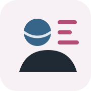

Considero la metodologia della ricerca sociale non come un insieme statico di procedure, ma come un campo esposto continuamente alla trasformazione degli strumenti, delle istituzioni, dei dati e delle forme contemporanee della conoscenza.
Mission e ricerca
Esplorare le frontiere della ricerca sociale.
Sono un metodologo della ricerca sociale e mi occupo delle trasformazioni teoriche, tecnologiche e organizzative che attraversano la produzione della conoscenza empirica. In questo senso, considero la ricerca di frontiera non come inseguimento della novità, ma come esplorazione critica dei cambiamenti che modificano strumenti, pratiche e ambienti della ricerca contemporanea.
Interessi principali
- Innovazione metodologica Nuovi strumenti, combinazioni di tecniche, disegni di ricerca ibridi e attenzione alla qualità del dato, con particolare interesse per la trasparenza delle procedure e la solidità delle inferenze.
-

Qualità della vita dei ricercatori Condizioni di lavoro, traiettorie accademiche, precarietà, benessere organizzativo e rapporto tra vita professionale, riconoscimento scientifico e sostenibilità del lavoro di ricerca. - Usi e impatti delle tecnologie digitali Trasformazione digitale, ambienti di ricerca, piattaforme, IA e sistemi informativi come elementi che modificano pratiche empiriche, organizzazione del lavoro e produzione della conoscenza.
Mission
Metodologia come spazio critico
Considero la metodologia della ricerca sociale non come un repertorio neutrale di tecniche, ma come uno spazio critico di costruzione della conoscenza empirica. Le procedure di rilevazione e di analisi non rappresentano soltanto strumenti operativi, bensì contribuiscono a definire ciò che può essere osservato, classificato, interpretato e reso socialmente visibile.
Il mio interesse di ricerca si concentra sulle relazioni tra rigore metodologico, ambienti digitali, trasformazioni del lavoro scientifico e mutamenti nelle condizioni di produzione della conoscenza. In particolare, mi interessa comprendere come le configurazioni organizzative, i vincoli istituzionali e le logiche contemporanee della ricerca influenzino i processi di osservazione empirica e le traiettorie dei ricercatori.
Ritengo necessario riconoscere alla metodologia uno spazio autonomo e legittimato di riflessione scientifica. Troppo spesso il lavoro metodologico viene ridotto a funzione ancillare o a semplice applicazione tecnica, mentre la costruzione degli oggetti di ricerca, delle categorie analitiche e delle procedure di validazione costituisce una parte centrale della produzione scientifica stessa.
In questa prospettiva, la metodologia non riguarda esclusivamente la ricerca accademica, ma offre strumenti utili per interpretare organizzazioni, sistemi informativi, processi decisionali, politiche pubbliche e pratiche sociali contemporanee. La riflessività metodologica consente infatti di interrogare criticamente i modi attraverso cui i dati vengono prodotti, ordinati, interpretati e utilizzati nei diversi contesti sociali.
Attribuire il giusto peso a ogni fase della ricerca, dalla definizione del problema alla costruzione delle variabili, dalla rilevazione all’interpretazione dei risultati, significa riconoscere che ogni scelta metodologica produce conseguenze teoriche, empiriche ed etiche.
Infine, considero fondamentale la costruzione di comunità scientifiche fondate sul confronto metodologico. La ricerca empirica non si sviluppa soltanto attraverso competizione e specializzazione, ma anche tramite spazi condivisi di discussione, cooperazione e riflessività collettiva, capaci di rendere visibili problemi, limiti e possibilità della produzione di conoscenza contemporanea.
Mission
La metodologia della ricerca sociale come spazio critico di osservazione, costruzione del dato e interpretazione delle trasformazioni contemporanee.
Il mio interesse riguarda prevalentemente il rapporto tra rigore metodologico, ambienti digitali, nuove forme di osservazione e trasformazioni della produzione empirica.
Mi interessa comprendere in che modo strumenti, pratiche e trasformazioni tecnologiche modificano la formulazione dei problemi conoscitivi, la costruzione del dato e l’interpretazione delle evidenze empiriche.
Mi interessa inoltre osservare come i cambiamenti tecnologici e organizzativi trasformano pratiche di ricerca, gerarchie disciplinari e condizioni di produzione della conoscenza scientifica.
Interessi di ricerca
I miei interessi principali riguardano il benessere dei lavoratori, gli usi e gli effetti delle tecnologie digitali, gli AI-powered tools nella ricerca sociale e le innovazioni metodologiche legate a nuovi strumenti o a nuove combinazioni di strumenti esistenti.
01
Benessere dei lavoratori
Qualità della vita, condizioni lavorative, traiettorie professionali, precarietà accademica, benessere organizzativo e interdipendenza tra domini della vita.
02
Usi ed effetti delle tecnologie digitali
Tecnologie digitali nei contesti educativi, organizzativi e lavorativi, trasformazione digitale, competenze digitali e platform society.
03
Intelligenza artificiale e ricerca sociale
Uso critico dell’intelligenza artificiale nella ricerca sociale, riflessione sui limiti metodologici degli strumenti generativi e studio delle possibilità di integrazione tra AI, ricerca empirica e controllo della qualità del dato.
04
Innovazione metodologica
Riflessioni metodologiche sull’uso di nuovi strumenti di ricerca, sulla sperimentazione empirica e sull’adattamento delle tecniche ai problemi conoscitivi.
05
Nuove combinazioni di strumenti esistenti
Integrazione tra strumenti tradizionali e digitali: survey, interviste, audio-diari, osservazione, strumenti online e strategie mixed methods.
06
Qualità del dato e robustezza metodologica
Coerenza tra domanda di ricerca, strumenti, dati, analisi e interpretazione; attenzione alle omissioni, ai bias e ai limiti delle evidenze empiriche.
Approccio metodologico
Il mio approccio parte da una convinzione: ogni innovazione metodologica ha valore solo se aumenta la qualità, la trasparenza e la controllabilità del processo di ricerca.
Rigore metodologico e ricerca di frontiera.
Lavorare sulle frontiere della ricerca sociale non significa inseguire ogni novità. Significa interrogare criticamente strumenti, tecniche e combinazioni metodologiche per capire che cosa rendono visibile, che cosa lasciano fuori e quali rischi introducono.
Per questo il mio interesse per l’innovazione resta legato alla qualità del disegno di ricerca, alla costruzione del dato, alla validità dell’interpretazione e alla responsabilità con cui i risultati vengono comunicati.
- Progettazione del disegno di ricerca
- Costruzione e revisione di questionari
- Survey research e strumenti di rilevazione online
- Interviste, osservazione, audio-diari e strumenti digitali
- Mixed methods e integrazione tra dati quantitativi e qualitativi
- Valutazione critica della robustezza metodologica
Methods Guards AI
Methods Guards AI nasce esattamente da questa prospettiva: usare l’intelligenza artificiale come supporto alla lettura metodologica critica, non come sostituto del giudizio scientifico.
Il progetto traduce l’interesse per gli AI-powered tools in uno strumento sperimentale orientato a individuare fragilità, omissioni, incoerenze e punti di miglioramento in paper, tesi, report e progetti di ricerca.
L’obiettivo è rendere più visibile ciò che spesso rimane implicito: la struttura metodologica che sostiene — o indebolisce — una ricerca.
Parliamo di ricerca, metodo o innovazione?
Scrivimi per collaborazioni scientifiche, consulenze metodologiche, attività formative o progetti di ricerca empirica.
Contattami